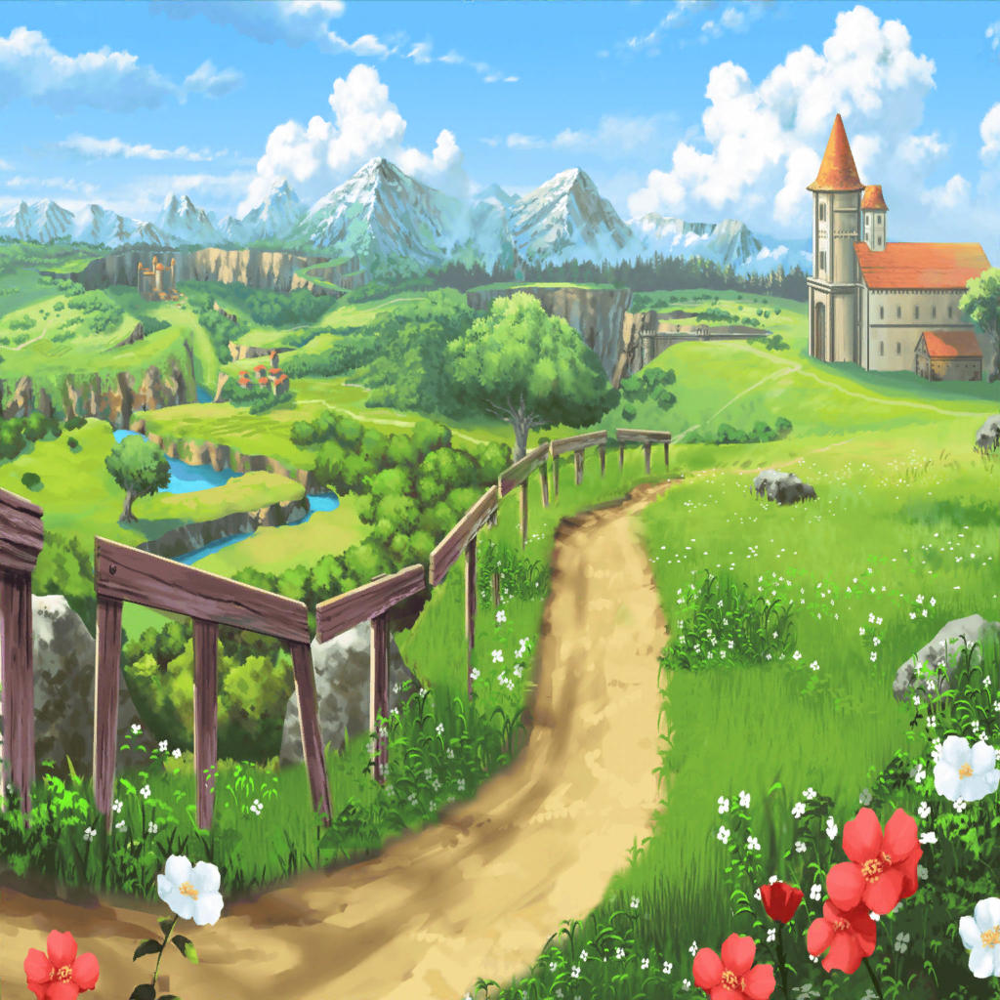
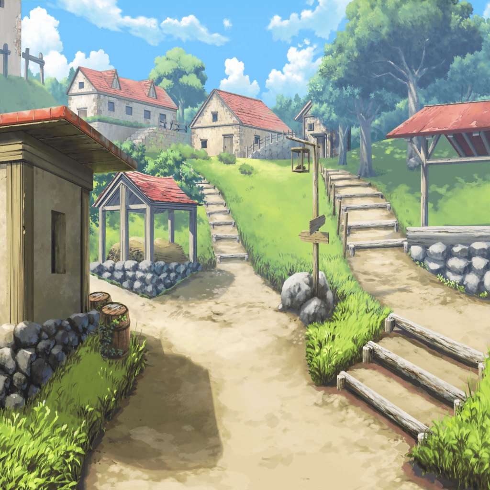

アゼミチ村道
聖堕天使あこ姫
友希那さん……こないね
サヨ
やはりフィールドボスに……？
リサ
そ、そんなことないって！
さっき迷子になったときも大丈夫だったじゃん！
サヨ
ですが……少し遅すぎますし……
ユキナ
あら？ みんなここにいたのね
聖堕天使あこ姫
あーーーっ！ 友希那さんっ！！
リサ
友希那！！
よかった〜。また迷子になったのかと思ったじゃんっ！
ユキナ
そんなに何度も迷ったりしないわ
RinRin
え……？
聖堕天使あこ姫
友希那さん、その手に持ってる光ってるヤツって……っ！？
ユキナ
ああ……これは……

ロゴロ鉱山・深部
ユキナ
またみんないなくなってしまったわ……
ユキナ
どうしてすぐにどこかへ行ってしまうのかしら
ユキナ
まぁ……あの大きなモンスターもどこかへ行ったから助かったけど
ユキナ
あれは……さっきあこが探していた……キラぽん？
ユキナ
……！
RinRin
フィールドボスの注意がこっちにきているうちに、
友希那さんはキラぽんを倒したってことですか……？
サヨ
では、湊さんが手に持っているその光ったものは……
聖堕天使あこ姫
キラぽんのしっぽだよっ！
めっちゃレアなアイテムなんだよ〜っ！
ユキナ
そんなにすごいものだったの……はい、あげるわ
聖堕天使あこ姫
え！？ いいんですか！？
ユキナ
ええ、私には必要ないもの
聖堕天使あこ姫
や、やったーーーーっ！
ありがとーーーございますっ！
友希那さんっ！！！
リサ
良かったねーあこ☆
聖堕天使あこ姫
うん、リサ姉もみんなもありがとーーっ！
サヨ
それでは、そろそろ村に戻りましょうか。
手紙をジェイクさんに届けなくてはいけないんですよね
RinRin
そうですね、行きましょう(○ ' ω '○)

旅立ちの村
リサ
いたいた、ジェイクさんはあの人だったよね？
聖堕天使あこ姫
そうだよっ！ あとはこの手紙を……りんりん！
RinRin
じゃあ、報告するね。『リンダの手紙を渡す』
ジェイク
これは……リンダからの手紙……？
ありがとう旅の人、本当にありがとう……
リサ
こうやって手紙を何回も受け取ってるんだよね……
それでも会えない二人かぁ。
なんかほんと切ないお話だね……
ジェイク
お礼といっては何ですが、これを差し上げます。
どうかこの先もお気を付けて
サヨ
お礼……ですか、一体何をもらったんですか？
RinRin
『リンダのサイス』ですね
ユキナ
サイス……？
大きな鎌のことだったかしら
聖堕天使あこ姫
そうですっ！
あこ、ネクロマンサーだから
この武器がどうしてもほしくて……っ！
リサ
でも、なんで『リンダのサイス』なの？
RinRin
実は……この物語を進めると、
リンダさんは鉱山のモンスターに体をのっとられて
魔女になってしまうんです……
ユキナ
あの人自身がモンスターになってしまうということ？
RinRin
はい……それで、この村が襲われることになるんですけど、
その時にリンダさんの持っている武器が、
その『リンダのサイス』なんです
リサ
う、うわー……なんか切ないと思ってたけど、
それを通り越してめっちゃへこむ話だね……
サヨ
それなら、リンダさんを無理にでも
村に連れ帰ってこなければ
いけなかったのではないですか？
聖堕天使あこ姫
ゲームだからそれは無理ですよ〜
サヨ
そうなんですね……
リサ
まぁでも、あこがほしかった武器が手に入ってよかったじゃん♪
聖堕天使あこ姫
うんっ！ ほんっとにみんなありがとーございましたっ！
聖堕天使あこ姫
りんりん、この武器持って今度一緒にダンジョン行こうねっ！
RinRin
そうだね('ω'*)
リサ
じゃあ、これでゲームは終わりかな？
RinRin
はい。そうですね、これでおしまいです。
あの……みなさん……どうでしたか？
サヨ
初めてというのもあるのでしょうが、
覚えることが多くて驚きました
ユキナ
そうね、私もよく分からなかったわ
リサ
操作はよく分かんなかったけど、こうやってみんなで
ワイワイ何かをやるのは楽しいよね。お話もちゃんとしてて
結構面白かったから、アタシはまたやってもいいなーって感じ☆
聖堕天使あこ姫
リサ姉、ほんとっ！？
リサ
ほんとほんとっ！
聖堕天使あこ姫
やったーーーーっ！ 絶対だよっ！
リサ
あははっ♪ あこたちがハマるのもちょっとわかるよ〜
ユキナ
ゲームをするのはいいけど、バンドの練習が先よ
聖堕天使あこ姫
はーいっ！！！
RinRin
あこちゃんやる気だね(ﾉ`ω´)ﾉ
聖堕天使あこ姫
もっちろん！ みんなに手伝ってもらって、武器だけじゃなくて
キラぽんのしっぽまでゲットできたんだよ！？
絶対あこも演奏で恩返ししますっ！ がんばるぞー！
サヨ
ゲームをするというのはちょっと寄り道でしたが、
宇田川さんのやる気が出たのなら、
結果的には良かったのかもしれませんね
ユキナ
どうかしら……それはこの後の練習次第ね